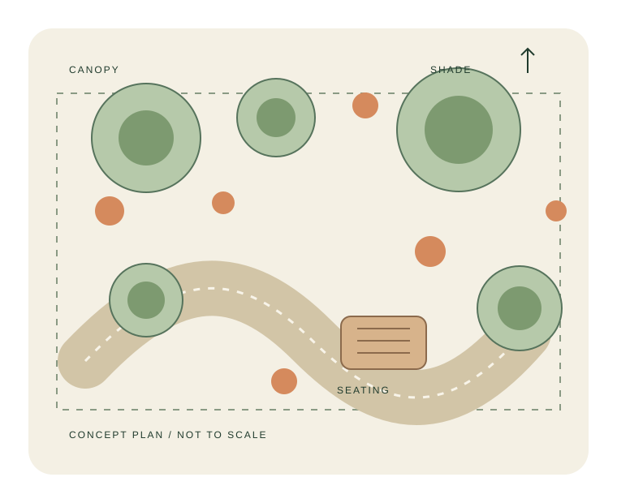

LANDSCAPE DESIGN · LUSAKA, ZAMBIA
Outside,
reimagined.
Gardens that make room for living. Thoughtful landscapes shaped around the way you move, gather, rest and grow.
A fictional garden studio concept · Lusaka

WITH
INTENTION✳
THE MOSS / LINE IDEA
A good garden is not just something to look at. It changes how a place feels.
We bring together spatial planning, considered planting and practical aftercare. The result is an outdoor space with a clear point of view — and a plan for how it will mature.
WHAT WE CAN SHAPE
From first sketch
to living space.

FIELD NOTE 004 / SPATIAL STUDYDESIGN THAT STARTS WITH PLACE
Read the site.
Then draw the garden.
Light, existing trees, soil, drainage, water access and everyday routines all matter. We begin by understanding what is already there before deciding what should come next.
- Site and use assessment
- Planting character and material direction
- Clear scope, stages and care notes
A LIVING PALETTE
Plant for the
whole year.
Explore the roles that plants can play in a garden — from shade and screening to texture, colour and ground cover. Final selections always depend on site conditions and local horticultural advice.
Explore the plant library ↗
A BETTER FIRST STEP
“Before choosing the plants, decide what you want the garden to make possible.”